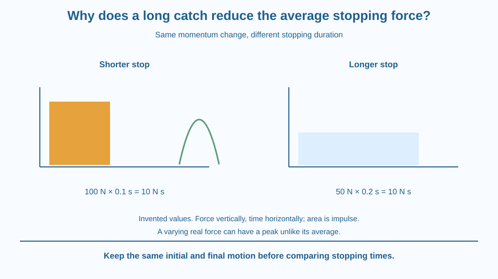

Relate a fixed momentum change to impulse and average stopping force. Explain why extending stopping time can reduce average force without reducing the required total impulse. Distinguish average from peak force and use paper models rather than dangerous catching tests.
A catcher moves the hands back as a ball is brought to rest. The ball still goes from its incoming motion to rest, but the stopping process takes longer than it would against an unyielding surface.
How can the same change in momentum occur with a different average force? The change depends on force acting over time, not on force magnitude alone. A lower force maintained longer can supply the same total impulse in a simplified comparison.
The useful question is what is held fixed and what is deliberately changed.
Impulse is the effect of force accumulated over a time interval. For a constant or appropriately averaged net force, impulse equals average force × stopping time. It is also equal to the object's change in momentum.
If the ball begins with the same velocity and finishes at rest in two comparisons, its momentum change is the same. The stopping impulse must therefore have the same magnitude, assuming the same ball and relevant conditions.
For that fixed change, average force = momentum change / time interval. A longer stopping interval gives a smaller average force magnitude. This is the relationship behind a long catch in the model.
Consider an invented momentum-change magnitude of ten kilogram metres per second. If stopping lasts 0.1 seconds, the average force magnitude is 100 newtons. If it lasts 0.2 seconds, the average is 50 newtons. These are arithmetic examples, not measured human-safe catching limits.
Impulse units can be written newton seconds, equivalent to kilogram metres per second. The matching units connect the force-time account with the momentum account. Force and impulse are not the same quantity.
Real force can vary during contact. The peak force may differ substantially from the average. A longer interval often helps reduce loading, but the exact force pattern, contact area and material response also matter to practical injury or damage.
Stopping distance and stopping time are related through the motion, but they are not interchangeable units. Moving the hands back can allow the ball to slow over a longer path and time. A report should say which quantity is measured or modelled.
If a ball rebounds instead of ending at rest, its momentum change can differ. Comparing a catch with a rebound while assuming identical impulse would ignore the changed final velocity. This lesson specifies a common final state so the time comparison is meaningful.
Draw two force–time rectangles with equal areas. Make one tall and narrow and the other lower and wider. The area represents impulse; height represents average force in the simplified constant-force model.
Write the same momentum change beside both. The visual shows how spreading the interaction over time can lower its average height without changing the total area.
Then add a variable-shaped curve with the same area but a sharp peak. This reveals why average alone is not a complete description of real loading. A useful explanation keeps the ideal relation and its practical limits together.
The SVG shows a ball being stopped over short and longer intervals in a paper sequence. Equal momentum-change labels appear beside force–time rectangles with equal areas and different heights.
The invented ten-unit momentum-change example gives 100 N and 50 N for the stated times. A separate peak marker warns that real contact forces need not remain constant.
The diagram provides no safe catching speed, sport-training prescription or impact test. Its role is to connect momentum change, time and average force while keeping the final rest condition explicit.

Cushioning and controlled deformation can extend stopping processes in many designs. Their actual performance depends on geometry and material response, not just the general instruction to make something soft.
In cricket, following the ball's motion while bringing it to rest provides a familiar conceptual example. Students should not test the relationship using hard balls, high speeds or throws toward another person.
A protective device requires proper design and validation. A paper calculation cannot certify a helmet, packaging system or sports technique. The lesson explains a physical relationship rather than replacing practical safety guidance.
Use squared paper, a ruler and a pencil. No real catching or dropping is needed.
The square counts are a mathematical analogy, not a measured impact. State the fixed momentum-change condition and common final rest state. Ask a partner why reducing height without increasing width would no longer represent the same impulse.
Why can a rebound require a larger momentum change than a stop from the same incoming motion? Use the final velocity direction rather than only the incoming speed.
Now compare two force patterns with the same impulse but different peaks. Explain why the average-force relation is informative yet insufficient to describe every practical damage outcome. The model is precise about its target and limited about the rest.
What equals the change in momentum?
Answer: B — Impulse is the force effect accumulated over time and equals momentum change.
Why can a longer catch reduce average force for the same stop?
Answer: C — Average force is the fixed momentum change divided by the longer interval.
Invented momentum change is 10 kg m/s over 0.2 s. What average-force magnitude results?
Answer: A — Dividing 10 by 0.2 gives 50 newtons.
Create a two-case stopping report holding mass, initial velocity and final rest fixed. Change the stopping time and calculate the average-force comparison using invented values.
Include a force–time diagram and a peak-force limitation. Do not propose a human impact or throwing trial. Your conclusion must distinguish spreading the same impulse over time from reducing the required momentum change itself.
A smaller average force can produce the same total change when it acts for longer. The key is the accumulated effect rather than the largest-looking arrow in one moment. This is why a process description can matter more than a single force number.
For the same momentum change, a longer stopping time reduces average force; impulse stays fixed, while real peak forces and contact details still matter.